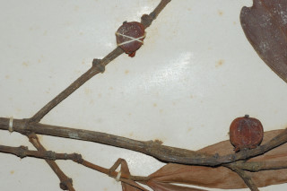
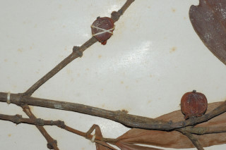

Trees up to 10 m tall.
10 ಮೀ ಎತ್ತರದವರೆಗೆ ಬೆಳೆಯುವ ಮರಗಳು.
10 മീറ്റര് വരെ ഉയരമുള്ള മരങ്ങള്.
மரங்கள் 10 மீ. உயரம் வரை வளரக்கூடியது.
Bark brown, rough.
ತೊಗಟೆ ಕಂದು ಬಣ್ಣದಲ್ಲಿರುತ್ತದೆ ಹಾಗೂ ಒರಟಾಗಿರುತ್ತದೆ.
തവിട്ടുനിറത്തിലുള്ള, പരുക്കന് പുറംതൊലി.
மரத்தின் பட்டை ப்ரவுன் நிறமானது, சொரசொரப்பானது.
Branchlets quadrangular with short internodes, glabrous.
ಕಿರುಕೊಂಬೆಗಳು ಚಿಕ್ಕ ಅಂತರಗಿಣ್ಣುಗಳನ್ನು ಹೊಂದಿದ್ದು 4 ಕೋನಗಳನ್ನು ಹೊಂದಿರುತ್ತವೆ ಹಾಗೂ ರೋಮರಹಿತ ವಾಗಿರುತ್ತವೆ.
അരോമിലവും, കുറിയ പര്വ്വങ്ങളോടു കൂടിയതുമായ, ചതുഷ്കോണത്തിലുള്ള ഉപശാഖകള്.
சிறிய நுனிக்கிளைகள் குறுக்குவெட்டுத் தோற்றத்தில் நான்கு கோணங்களை கொண்டது, சிறிய கணுவிடையுடையது, உரோமங்களற்றது.
Latex yellow.
ಸಸ್ಯಕ್ಷೀರ ಹಳದಿ ಬಣ್ಣ ಹೊಂದಿರುತ್ತದೆ .
മഞ്ഞനിറത്തിലുള്ള സ്രവം.
மஞ்சள் நிறமான சாறுயுடையது.
Leaves simple, opposite, decussate; petiole 0.5-0.8 cm long, rugose, canaliculate, decurrent, slightly sheathing at base; lamina 7.5-14 × 1-3 cm, linear lanceolate, sometimes subfalcate, apex gradually acuminate, base attenuate, chartaceous; secondary_nerves ca. 10 pairs, tertiary_nerves reticulo-percurrent.
ಎಲೆಗಳು ಸರಳವಾಗಿದ್ದು,ಕತ್ತರಿಯಾಕಾರದ ಅಭಿಮುಖ ಜೋಡನಾ ವ್ಯವಸ್ಥೆಯಲ್ಲಿರುತ್ತವೆ; ಎಲೆತೊಟ್ಟುಗಳು ರೋಮರಹಿತವಾಗಿದ್ದು 0.5 ರಿಂದ 0.8 ಸೆಂ.ಮೀ ಉದ್ದಹೊಂದಿದ್ದು,ಮಡಿಕೆಗಳನ್ನು ಹೊಂದಿದ್ದು, ಕಾಲುವೆಗೆರೆ ಸಮೇತವಾಗಿದ್ದು, ಕಾಡದವರೆವಿಗೆ ವಿಸ್ತರಿಸುತ್ತವೆ ಹಾಗೂ ಬುಡಭಾಗದಲ್ಲಿ ಒರೆಯನ್ನು ಹೊಂದಿರುತ್ತವೆ ಎಲೆಪತ್ರಗಳು 7.5 -14 X1 –3 ಸೆಂ.ಮೀ ಗಾತ್ರ ಹೊಂದಿದ್ದು, ರೇಖಾತ್ಮಕ ಭರ್ಜಿಯಾಕಾರದ ಅಥವಾ ಕೆಲವು ಸಂಧರ್ಭಗಳಲ್ಲಿ ಉಪ-ಕುಡುಗೋಲಿನಾಕಾರ ಹೊಂದಿದ್ದು, ಹಂತಹಂತವಾಗಿ ಕ್ರಮೇಣ ಚೂಪಾಗುವ ಮಾದರಿಯ ಎಲೆ ತುದಿ ಹಾಗೂ ಒಳಬಾಗಿದ ತಳವುಳ್ಳ ಮಾದರಿಯ ಬುಡವನ್ನು ಹೊಂದಿದ್ದು ಕಾಗದವನ್ನೋಲುವ ಮಾದರಿಯಲ್ಲಿರುತ್ತವೆ; ಎರಡನೇ ದರ್ಜೆಯ ನಾಳಗಳು ಸುಮಾರು 10 ಜೋಡಿಗಳಿರುತ್ತವೆ; ಮೂರನೇ ದರ್ಜೆಯ ನಾಳಗಳು ಸೂಕ್ಷ್ಮವಾದ ಜಾಲಬಂಧ ನಾಳವಿನ್ಯಾಸದಲ್ಲಿದ್ದು ಎಲೆದಿಂಡಿಗೆ ಅಡ್ಡವಾಗಿ ಕೂಡುವಂತಹುಗಳು.
സമ്മുഖ ഡെക്കുസേറ്റ് ക്രമത്തിലുള്ള, ലഘുപത്രങ്ങള്; ഇലഞെട്ടിന് 0.5 സെ.മി മുതല് 0.8 സെ.മി വരെ നീളവും തുരുമ്പന് രോമിലവും, ചാലോടുകൂടിയതും, ഡെക്കറന്റും, കീഴ്ഭാഗത്ത് ചെറുതായി പോളയോടുകൂടിയതുമാണ്; പത്രഫലകത്തിന് 7.5 സെ.മി മുതല് 14 സെ.മി വരെ നീളവും 1 സെ.മി മുതല് 3 സെ.മി വരെ വീതിയും, രേഖീയ കുന്താകാരവും, ചിലപ്പോള് ഉപ അരിവാള് ആകൃതിയുമാണ്, പത്രാ്ര്രഗം സാവധാനം ചെറുവാലിലവസാനിക്കുന്നു. പത്രാധാരം സാവധാനം നേര്ത്തവസാനിക്കുന്നതാണ്, കടലാസ് പോലത്തെ പ്രകൃതം; ഏതാ് 10 ജോഡി ദ്വിതിയ ഞരമ്പുകള്; ജാലിത പെര്കറന്റ് വിധത്തിലുള്ള ത്രിതീയ ഞരമ്പുകള്.
இலைகள் தனித்தவை, எதிரடுக்கமானவை, குறுக்குமறுக்கமானவை; இலைக்காம்பு 0.5-0.8 செ.மீ. நீளமானது, சுருக்கங்களுடையது (ரூக்கோஸ்), இலைக்காம்பு குறுக்குவெட்டுத் தோற்றத்தில் கேனாலிகுலேட், டெக்கரண்ட், தளத்தில் சிறிய உறை போன்ற அமைப்புடையது; இலை அலகு 7.5-14 X 1-3 செ.மீ. கோட்டு ஈட்டி வடிவானது, சிலசமயங்களில் காதுமடல் (ஃபால்கேட்), அலகின் நுனி அதிக்கூரியது, அலகின் தளம் அட்டனுவேட், சார்ட்டேசியஸ்; இரண்டாம் நிலை நரம்புகள் 10 ஜோடிகளுடையது, மூன்றாம் நிலை நரம்புகள் வலைப்பின்னல்-இணையான பெர்க்கரண்ட் கலந்தவை.
Flowers dioecious; male flowers in axillary, sessile fascicles; female flower solitary, axillary, sessile.
ಗಂಡು ಮತ್ತು ಹೆಣ್ಣು ಹೂಗಳು ಪ್ರತ್ಯೇಕ ಸಸ್ಯಗಳಲ್ಲಿರುತ್ತವೆ;ಗಂಡು ಹೂಗಳು ಅಕಷಾಕಂಕುಳಿನಳ್ಲಿರುವ ತೊಟ್ಟುರಹಿತ ಗುಚ್ಛಗಳಲ್ಲಿರುತ್ತವೆ; ಹೆಣ್ಣು ಹೂಗಳು ಒಂಟಿಯಾಗಿದ್ದು ಅಕ್ಷಾಕಂಕುಳಿನಲ್ಲಿರುತ್ತವೆ.
ആണ്-പെണ് പൂക്കള് വ്യത്യസ്ത മരങ്ങളിലുാകുന്നു; ആണ് പൂക്കള്, കക്ഷങ്ങളിലെ, അവൃന്ത കൂട്ടങ്ങളായുാകന്നു; പെണ് പൂക്കള്, അവൃന്തവും, കക്ഷങ്ങളില് ഒറ്റക്കുാകുന്നതുമാണ്.
மலர்கள் ஒர்பாலானவை, ஈரகம் கொண்டவை; ஆண்மலர்கள் இலைக்கோணங்களில் தொகுப்பானவை, காம்பற்றவை; பெண்மலர்கள் தனித்தவை, இலைக்கோணங்களில் காணப்படுபவை மற்றும் காம்பற்றவை.
Berry globose or subglobose, 2 cm across.
ಬೆರ್ರಿ ಗಳು ಗೋಳಾಕಾರ ಅಥವಾ ಉಪಗೋಳಾಕಾರದಲ್ಲಿದ್ದು 2 ಸೆಂ.ಮೀ ಅಡ್ಡಳತೆ ಹೊಂದಿರುತ್ತವೆ.
കായ 2 സെ.മി. കുറുകേയുള്ള, ഗോളാകാരമോ ഉപഗോളാകാരമോ ആയ ബെറിയാണ്.
முழுச்சதைகனி (பெர்ரி), கோளவடிவானது, 2 செ.மீ. குறுக்களவுடையது.

 
